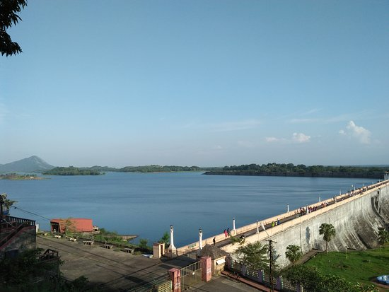
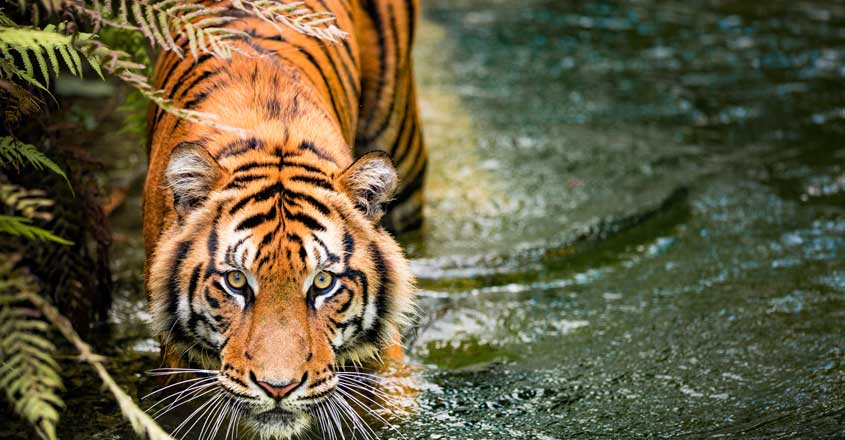

Nelliyampathy
Nelliyampathy is a hill station within the Nelliyampathy Forest Reserve,
in the southwest Indian state of Kerala. The road to it, which goes through the dense forests of the Western Ghats,
is known for its many hairpin turns. To the west is Kesavan Para, a vantage point with views of nearby tea plantations. Farther west is the 19th-century Pothundi Dam.
Northeast is the Seetharkundu Viewpoint, with waterfalls nearby.
1 / 3

2 / 3

Malampuzha Dam
Malampuzha Dam is the largest dam and reservoirs in Kerala, located near Palakkad, in the state of Kerala in South India, built post independence by the then Madras state.
Malampuzha Dam is the largest dam and reservoirs in Kerala, located near Palakkad, in the state of Kerala in South India, built post independence by the then Madras state.
3 / 3

Parambikulam Tiger Reserve
Parambikulam Tiger Reserve is situated in Chittur taluk of Palakkad district and is about 100 km away from Palakkad. Parambikulam can boast of the first scientifically managed teak plantations of the world and also houses the world's tallest and oldest teak tree.It include a wide range of flora and fauna.
Parambikulam Tiger Reserve is situated in Chittur taluk of Palakkad district and is about 100 km away from Palakkad. Parambikulam can boast of the first scientifically managed teak plantations of the world and also houses the world's tallest and oldest teak tree.It include a wide range of flora and fauna.